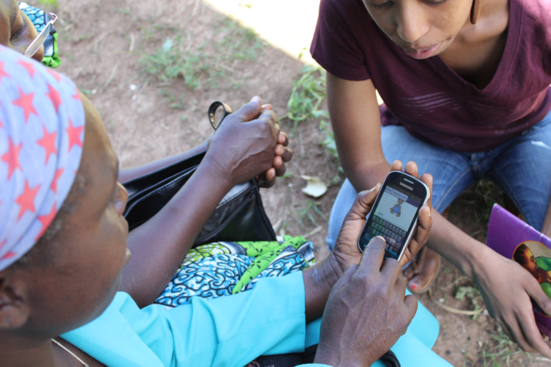
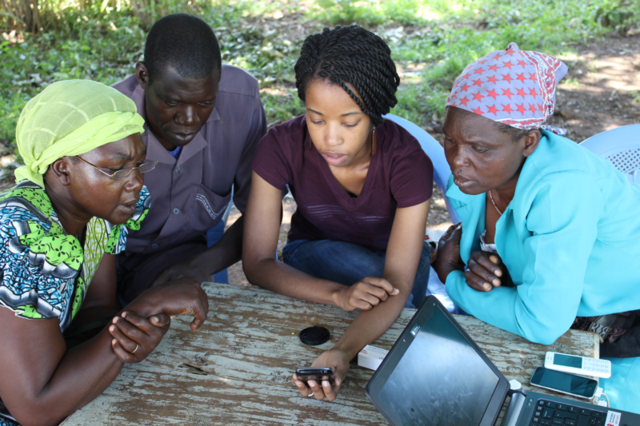

So you’ve decided to build a mobile application to support the data collection and service delivery needs of your frontline program - that’s great!
But what exactly is app supposed to do? Who are your beneficiaries and what questions will you ask them? These are some of the earliest considerations when we begin designing a new mobile data collection app.
The vast majority of organizations we work with have an existing program - with forms, guidelines, and protocols - that their application is meant to digitize. So the task is to figure out how best to take your existing paper forms that frontline workers fill out, and turn them into forms, modules, and questions within CommCare. Often, the best answer to “how do I get these forms into a mobile app?” is not “I’ll simply replicate the exact paper form into a form on CommCare!”
In 2014, we worked with Save the Children Kenya to build a mobile data collection application for over 1,200 Community Health Volunteers (CHVs) in Bungoma County, as a part of the Boresha project. We grappled with exactly this issue of taking existing forms and government indicators and transforming them into a coherent, efficient service delivery and data collection app for households, women, and children.
Let’s look closer at Save the Children Kenya’s app design journey to see several common issues organizations face when designing and building their mobile applications-and how they overcame them.

The World of Paper Forms
STC Kenya had several existing forms and sets of indicators they needed to collect - some from the Ministry of Health (MoH) and some from Save the Children International. The existing paper forms that STC Kenya needed to integrate into their app were:
- MoH 513: A household register form that collected information about each household member (e.g. name, age, date of birth, etc.), as well as household-level indicators (e.g. access to a latrine, treated water, etc.)
- MoH 514: Another register for mothers and children, asking questions about pre- and postnatal care for mothers, and growth monitoring questions for children with the option to refer mothers or children for care. (NB: the paper version of this form also forces the data collector to recollect some indicators also found on MoH 513 form)MoH 515: An aggregate report that includes summations of the 513 and 514 indicators, for example, “number of households using treated water” or “Total women 15-49 years.” This report would be aggregated by the Community Health Extension Worker (CHEW) - a supervisor overseeing 5-10 CHVs.
- SCI Indicators: A set of indicators that Save the Children was focused on collecting and improving, including information about health insurance and institutional delivery.
The problem with simply building these forms out as they were on paper was that:
- There was duplicative data collected in some of the forms
- Several forms collected information about different beneficiary types (which correspond to different case types in the app)
- Different indicators needed to be collected at different time intervals (e.g. a household visit needed to be conducted monthly, but if there was a pregnant woman, they needed more regular visits)
Because of this, Dimagi staff and STC Kenya decided it would make the most sense to take all of the individual questions and break them up into new CommCare forms.

The First Step: Defining Case Types & Allocating Questions
One of the first steps in separating out indicators was defining the different case types we would use in the app. After looking at all of the indicators, we decided we would have the following case types:
- Household
- Person (child case of the household)
- Pregnancy (child case of a person)
- Referral (child case of a person)
Once we had the four case types defined, it became easier to put relevant indicators where they belonged. For instance, all of the household-level indicators (e.g. access to latrines, treated drinking water, hand washing facilities, etc.) would go in Household registration or Household follow-up forms. Similarly, indicators about pre- and postnatal care would go in the Pregnancy forms, and so on and so forth.
One interesting decision we made was about Person cases. Since we needed to register and follow up with all household members individually - not just women and children- we used one case type(Person) to encompass all household members. Then, in modules and forms where we only wanted to see mothers or children, we could use either case list filters or form display conditions to ensure that only Person cases where the sex was female or the age was under two would display.
Step Two: Defining Workflows
After we knew what questions needed to be asked to which case type, we had a sense for how we could organize things within the data collection tool itself. The next thing we needed to figure out was the chronology of the mobile app: When would you register a household and its members? How often did you need to follow up with which beneficiaries? What would happen if you had a pregnant woman, but also needed to do a monthly home visit?
The second set of sifting and organizing involved organizing all of the questions and indicators by how often and when they needed to be collected. For example, all prenatal questions were grouped into one form, all questions regarding birth and delivery grouped into another, and all postnatal question grouped into a third form. Similarly, we grouped household questions into two groups: one for monthly visits and one for ad-hoc activities, which happen when the household changes (e.g. death or birth of a new member).
The final product was a long list of forms, all grouped chronologically by case type - how often they needed to be filled. This served as the foundational outline for the entire app.

Building the App
Since we spent so much time designing the application, building was much easier. We knew the questions, answer options, and order in which we should build all of our forms and modules. One key thing we did to ensure easy access to data was label question IDs to correspond to their MoH or STC indicator. For example, the question in the Birth and Delivery form “Who conducted the delivery?” has the question id MOH514_conducted_delivery. This tells the user that this is an indicator from the MoH 514 form, making it much easier when the data is exported or used in reports.
Downsides to Form Reorganization
So far we’ve discussed the process of how to reorganize and split up existing paper forms. In many cases, it’s necessary to split up existing forms for case type and data quality issues, and it can obviously help streamline mobile data collection. Using hidden values and calculations helps collect more accurate data, and using case management both reduces the amount of duplicative data entry and collection errors.
But what about the potential downsides to re-formatting existing paper forms? There are a few potential pitfalls in mobile data collection app deployment, and organizations should be well aware of the possible complications. The biggest obstacle is user confusion. If you have a workforce that has been using paper forms for several years, they will have become very accustomed to those forms. Many field workers can even recite entire paper forms by heart! They know how to navigate throughout the forms, and which questions to skip or focus on based on a person’s response.
There will be an initial re-learning that anyone who is used to the paper forms will have to do when they switch to a mobile phone. Mobile users will need to learn when to fill out which CommCare forms, and they need to understand where certain questions live within the app. Three ways you can help your mobile workers are:
- Reinforce the new workflows during training
- Create a short pocket guide that reviews various workflows
- Build an in-app module that reviews various workflows
If your organization has done a big re-vamp of forms, you will need to spend time reviewing this with your mobile workers at their initial in-person training when they get their phones. If you would like to give your mobile workers an additional tool, you can consider creating either a one-page paper guide or an in-app form that outlines the different workflows.
After the pilot phase with STC Kenya, we got feedback that users were confused about what form to fill out when (especially during ad hoc visits). We created a one-page, foldable, laminated “pocket guide” which had some quick reference material for users - including a flowchart of which forms to use during which visits. This meant if users ever had a question, they had to go no further than their own pocket to figure out the answer!
Similarly, some partners have chosen to include a “How to Use the App” guide as a reference module in the app itself. Once users log in, they can immediately go to the reference module if they are unsure of how to proceed in a workflow
The beginning stages of designing and building a mobile data collection app are some of the most important in your journey to mobile. We hope this review has demonstrated why it may make sense to take a step back and use this app design phase as an opportunity to reevaluate and redesign paper forms, in order to enable more streamlined and efficient workflows.